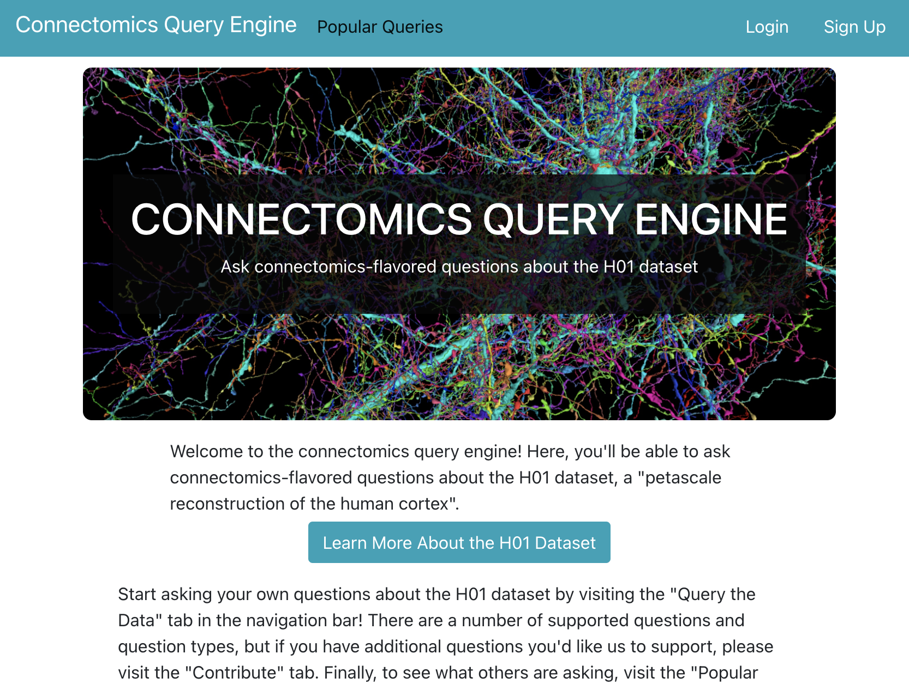
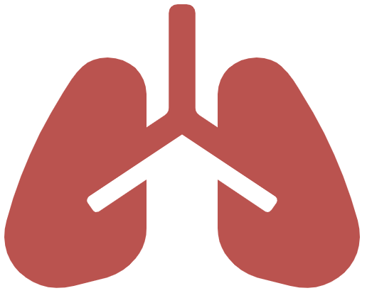

My Story
As an undergrad, I studied both music and biomedical engineering as part of a double degree program.
This is also where I had my first research experience in the Johns Hopkins University Applied
Physics Lab (JHUAPL) CIRCUIT program. At JHU and APL, I had the opportunity to work in a variety of spaces
ranging from nanoscale connectomics and precision medicine to neuromorphic computing and robotics,
where I fell in love with research, machine learning, and neuroscience, and, most importantly, it’s
where I developed a passion for mentorship and outreach. I began as a student and quickly
transitioned to a leadership role, mentoring students and overseeing the first iteration
of the high school version of CIRCUIT.
In August of 2021, I moved to Boston to pursue my PhD, supported by the Biomedical
Informatics and Data Science Research Training (BIRT) fellowship. Here, I pursued rotations
in labs in both the nanoscale connectomics and healthcare AI spaces (
Jeff Lichtman
,
Pranav Rajpurkar
,
Raj Manrai
,
Isaac Kohane
), where I worked on a variety of projects and even published a few papers. Ultimately, I
chose to join the Manrai lab and focus on kidney function estimation, but I am grateful
for the opportunities I've had to learn and grow in my undergraduate and rotation research
experiences.
Previous Research Projects

Connectomics Annotation Metadata Standardization for Increased Accessibility and
Queryability
In an effort to better understand structural organization and anatomy of nervous
systems at nanoscale spatial
resolution, researchers have collected increasingly large, even petascale,
connectomics datasets. These datasets
have the potential to form the basis for the next generation of brain atlases at
submicron resolution. However,
variability in data collection, annotation, and storage approaches limits effective
comparative and secondary analysis.
This project aims to provide design considerations for community-adopted
standardized annotation format, develop an
example database and API for storing and accessing the first nanoscale human
connectomics dataset, and create a
user-friendly
web app
for exploring and querying the dataset.
Read More.

Predicting Physiological Deterioration and Mortality in Mechanically Ventilated ICU
Patients
Previous work has demonstrated that the
severity of lung damage in experimental models of ventilator-induced lung injury
depend on the mechanical power of the ventilator. In this project, we build machine
learning models (using the Phillips
eICU Database) that leverage patient data (including demographics, ventilator
settings, lab values, etc.) to predict
whether a ventilated patient will deteriorate or expire. Such a model could be used
to inform decisions about patient-specific
ventilator settings or alert clinicians to deteriorating patients.
Read More.
-
JHU Dept. of Medicine & Whiting School of Engineering (WSE) Research Retreat 2021
WSE Research Award Finalist
-
American College of Chest Physicians Annual CHEST Conference 2021
Examining Plaque Toxicity to Synaptic Activity in an Alzheimer’s Disease Mouse Model
Alzheimer's is a disease that causes patients to progressively lose memory and
cognitive function, typically living
only 4-7 years after diagnosis due to limited treatment options. Biochemically,
Alzheimer's is known to be associated
with extracellular deposits of Amyloid-Beta peptide, or plaques, but causality and
mechanism are not fully understood.
Therefore, as part of a rotation in Jeff Lichtman's lab at Harvard, I studied the
relationship between proximity to plaque
material and synapse density in an effort to better understand whether plaque may be
contributing to cognitive deficits
through toxicity to synaptic activity. To do this, we ran synapse, membrane, and
plaque detection models on an electron
microscopy volume to obtain noisy annotations, filtered those annotations
automatically, and estimated synapse distributions
close to and far from a plaque of interest.
A Review of Recent Randomized Controlled Trials for Human-AI Collaboration in
Healthcare
In recent years, the application of machine learning to healthcare has become an
increasingly
popular research area. Perhaps more exciting, however, is the recent upsurge
in prospective studies, even randomized controlled trials, for AI-supported health
tools, the lack of which
has previously held research back from translation. In this project we aim to
systematically determine the
current state of the field through review of recent randomized controlled trials.
This is a team project
completed as part of a rotation project in Pranav Rajpurkar's lab.